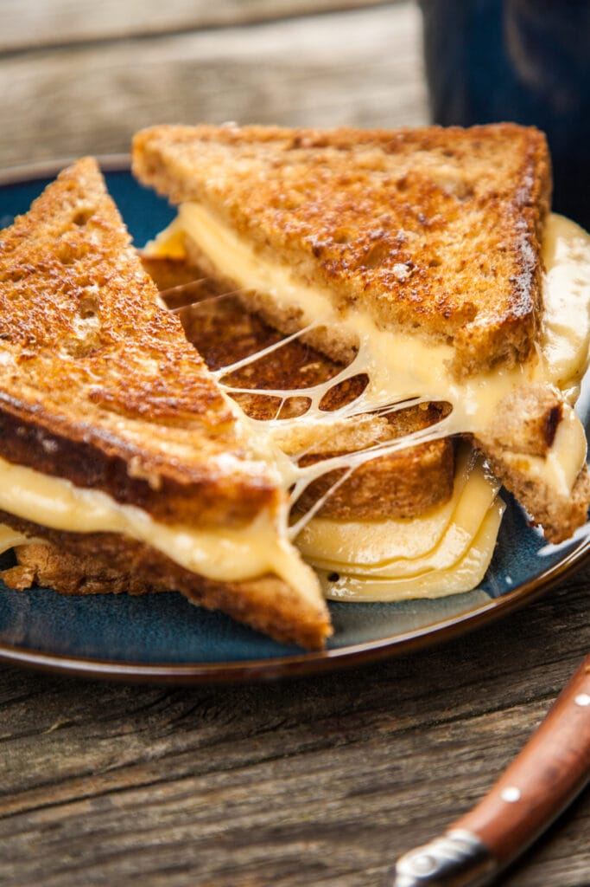

HOT HAM AND CHESSE SANDWICH

This ham and cheese sandwich is great on a cool night with a tea cup. I add spinach, arugula, tomatoes, roasted peppers, chopped
olives or a spoonful of salsa to the sandwich, depending on my mood and what's in the fridge.
Time: 5 mins
Cook Time: 10 mins
Total Time: 15 mins
Servings: 1
INGREDIENTS
- 2 slices whole grain bread
- 2 teaspoons butter
- 2 slices Swiss cheese
- 2 thin slices deli ham
- 1 teaspoon mayonnaise
- 1 teaspoon whole grain mustard
Directions
- Preheat a skillet over medium-high heat.
- Spread one side of each slice of bread with 1 teaspoon butter.
- Place one slice butter-side down in the hot skillet. Top with Swiss cheese and ham.
Spread the unbuttered side of second slice of bread with mayonnaise and mustard; place it butter-side up on sandwich.
- Cook in the hot skillet until golden brown and cheese is melted, about 3 minutes per side.